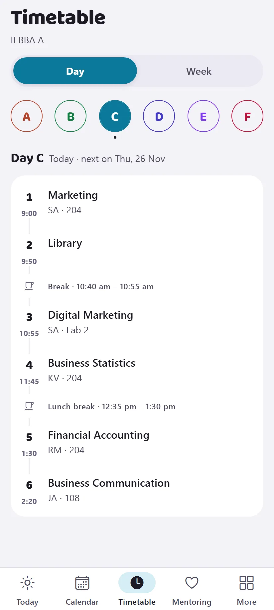

Today, at a glance
Open the app and see the day order, the class on now with its room and professor, and what comes next. Holidays, changed hours and special timings are already in.
- The timetable by day order, for your class or for the hours you teach
- The college calendar with events, holidays and shared birthdays
- A reminder before each class, if you want one
